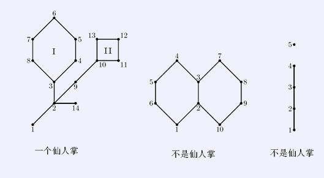
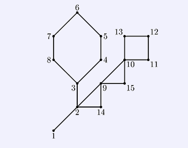

如果某个无向连通图的任意一条边至多只出现在一条简单回路（simple cycle）里，我们就称这张图为仙人掌
图（cactus）。所谓简单回路就是指在图上不重复经过任何一个顶点的回路。

举例来说，上面的第一个例子是一张仙人图，而第二个不是——注意到它有三条简单回路：（4，3，2，1，6
，5，4）、（7，8，9，10，2，3，7）以及（4，3，7，8，9，10，2，1，6，5，4），而（2，3）同时出现在前两
个的简单回路里。另外，第三张图也不是仙人图，因为它并不是连通图。显然，仙人图上的每条边，或者是这张仙
人图的桥（bridge），或者在且仅在一个简单回路里，两者必居其一。定义在图上两点之间的距离为这两点之间最
短路径的距离。定义一个图的直径为这张图相距最远的两个点的距离。现在我们假定仙人图的每条边的权值都是1
，你的任务是求出给定的仙人图的直径。
输入的第一行包括两个整数n和m（1≤n≤50000以及0≤m≤10000）。其中n代表顶点个数，我们约定图中的顶
点将从1到n编号。接下来一共有m行。代表m条路径。每行的开始有一个整数k（2≤k≤1000），代表在这条路径上
的顶点个数。接下来是k个1到n之间的整数，分别对应了一个顶点，相邻的顶点表示存在一条连接这两个顶点的边
。一条路径上可能通过一个顶点好几次，比如对于第一个样例，第一条路径从3经过8，又从8返回到了3，但是我们
保证所有的边都会出现在某条路径上，而且不会重复出现在两条路径上，或者在一条路径上出现两次。
对第一个样例的说明：如图，6号点和12号点的最短路径长度为8，所以这张图的直径为8。

【注意】使用Pascal语言的选手请注意：你的程序在处理大数据的时候可能会出现栈溢出。
如果需要调整栈空间的大小，可以在程序的开头填加一句：{$M 5000000}，其中5000000即
指代栈空间的大小，请根据自己的程序选择适当的数值。